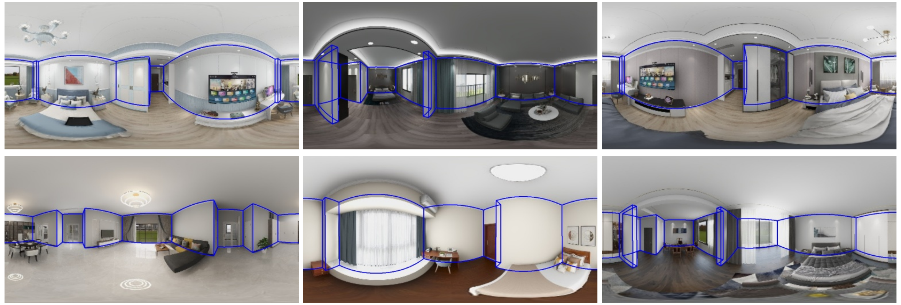

Layout Estimation
Introduction
Layout estimiation is a challenging task in 3D vision. Several datasets are proposed to tackle this problem, including the large scale synthetic dataset Structured3D. MINERVAS system has the ability to generate dataset like Structured3D.
Here we show the DSL for generating data which helps boosting the current layout estimation task.
More details can be found in the paper and supplementary document.
DSL code
In this example, we generate both panoramic rgb images and scene structure information.
We first filter scenes with Manhattan-world assumption using ManhattanSceneFilter in the Scene Process Stage.
In the Entity Process Stage, we then remove the cameras in the relatively empty rooms using CameraFilter. Next, we set the camera parameters (\eg, camera type and image resolution) using CameraSetting.
We randomize the positions of the cameras using CameraRandomizer.
After the Rendering Process Stage, we record the positions of room corners and cameras using StructureOutput.
from ksecs.ECS.processors.scene_processor import SceneProcessor
import glm
import copy
import sys
class ManhattanSceneFilter(SceneProcessor):
def is_manhattan_scene(self):
# Check Manhattan assumption for each room
Valid = False
for room in self.shader.world.rooms:
corners = room.boundary
shift_corners = copy.deepcopy(corners)
shift_corners.append(shift_corners.pop(0))
for i in range(len(shift_corners)):
direction = glm.vec2(shift_corners[i]).xy - glm.vec2(corners[i]).xy
direction = glm.normalize(direction)
shift_corners[i] = direction
EPSILON = 0.001
MANHATTAN = True
for i in range(len(shift_corners)):
cos = glm.dot(shift_corners[i], shift_corners[(i + 1) % len(shift_corners)])
if cos > EPSILON:
MANHATTAN = False
break
if MANHATTAN:
Valid = True
return Valid
def process(self):
if not self.is_manhattan_scene():
sys.exit(7)
from ksecs.ECS.processors.entity_processor import EntityProcessor
from shapely.geometry import Point
class CameraFilter(EntityProcessor):
def is_valid_room(self, room, num_furniture=3):
# Check if the number of furniture in the room is above threshold.
polygon = room.gen_polygon()
count = 0
for ins in self.shader.world.instances:
if not ins.type == 'ASSET':
continue
if polygon.contains(Point([ins.transform[i] for i in [3, 7, 11]])):
count += 1
return count > num_furniture
def delete_cameras_in_room(self, room):
polygon = room.gen_polygon()
for camera in self.shader.world.cameras:
if polygon.contains(Point([camera.position[axis] for axis in "xyz"])):
self.shader.world.delete_entity(camera)
def process(self):
# We only use rooms with more than 4 assets
for room in self.shader.world.rooms:
if not self.is_valid_room(room, 4):
self.delete_cameras_in_room(room)
class CameraSetting(EntityProcessor):
def process(self):
for camera in self.shader.world.cameras:
camera.set_attr("imageWidth", 1024)
camera.set_attr("imageHeight", 512)
camera.set_attr("cameraType", "PANORAMA")
import numpy as np
class CameraRandomizer(EntityProcessor):
def process(self):
for camera in self.shader.world.cameras:
random_vec = np.random.normal(0, 1, size=3)
camera_pos = np.array(list(camera.position.values()))
randomized_pos = camera_pos + random_vec * np.array([500.0, 500.0, 50.0])
camera.set_attr('position', x=randomized_pos[0], y=randomized_pos[1], z=randomized_pos[2])
camera.set_attr('lookAt', z=randomized_pos[2])
from ksecs.ECS.processors.render_processor import RenderProcessor
class Render(RenderProcessor):
def process(self, *args, **kwargs):
self.gen_rgb(distort=0, noise=0)
from ksecs.ECS.processors.structure_processor import StructureProcessor
class StructureOutput(StructureProcessor):
def process(self):
# write out the corners of the rooms in the scene
for room in self.shader.world.rooms:
for plane, height in zip(["floor", "ceiling"], [0, self.shader.world.levels[0].height]):
corners = []
for corner in room.boundary:
corners.append({'x': corner[0], 'y': corner[1], 'z': height})
self.shader.world.pick(
corners=corners,
catName=plane,
type='corners',
id=f"{room.roomId}_{plane}"
)
# write out cameras in the scene
for camera in self.shader.world.cameras:
self.shader.world.pick(
type="camera",
position=camera.position,
id=camera.id
)
MINERVAS output samples
